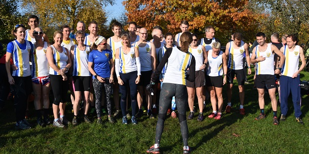

Sevenoaks AC fielded a team of 38 runners for the second match of the 2019/20 Kent Fitness League at New Barn Park, Swanley on 10th November. They put in a fine performance coming home third in the combined positions with the women third and men fourth on the day. After two matches the combined team lie second on countback by just 13 places with the excellent SAC women's team still leading their section.
Once again Mary Bridges, Cath Linney, Vanessa Gilmartin and Suzy Claridge were the Sevenoaks women's scorers although the whole team contributed to increasing the scores of rival teams. James Mason once again led the men's team, this time in sixth place, and was supported by fellow scorers John Witton, Guillaume Ninevan, Ben Bridges, Andrew Milne, Andrew Mead, Andy Nicoll and Zachary Ramsden.
The SAC results were:
| Ov Pos | Lg Pos | Runner | Age | Time | Club | Rating | # Races |
|---|---|---|---|---|---|---|---|
| 6 | 6 | James Mason | 36 | 31:58 | Sevenoaks AC | 98.63 | 11 |
| 19 | 19 | John Witton | 41 | 32:55 | Sevenoaks AC | 95.07 | 4 |
| 26 | 26 | Guillaume Nineven | 34 | 33:37 | Sevenoaks AC | 93.15 | 6 |
| 31 | 31 | Ben Bridges | 40 | 34:02 | Sevenoaks AC | 91.78 | 9 |
| 44 | 44 | Andrew Milne | 37 | 34:38 | Sevenoaks AC | 88.22 | 24 |
| 54 | 54 | Andrew Mead | 50 | 35:15 | Sevenoaks AC | 85.48 | 35 |
| 55 | 55 | Andy Nicoll | 39 | 35:16 | Sevenoaks AC | 85.21 | 12 |
| 66 | 66 | Lee Lintern | 39 | 35:44 | Sevenoaks AC | 82.19 | 32 |
| 71 | 71 | Jimmy George | 38 | 35:57 | Sevenoaks AC | 80.82 | 10 |
| 97 | 95 | Zack Ramsden | 53 | 37:02 | Sevenoaks AC | 74.25 | 2 |
| 105 | 103 | Daniel Witt | 44 | 37:14 | Sevenoaks AC | 72.05 | 54 |
| 111 | 108 | Richard Alford-Smith | 43 | 37:32 | Sevenoaks AC | 70.68 | Debut |
| 114 | 110 | James Baker | 54 | 37:37 | Sevenoaks AC | 70.14 | 24 |
| 129 | 122 | James Wright | 51 | 38:11 | Sevenoaks AC | 66.85 | 30 |
| 152 | 139 | Jatinder Soomal | 37 | 39:03 | Sevenoaks AC | 62.19 | 9 |
| 158 | 143 | Graham Dwyer | 47 | 39:18 | Sevenoaks AC | 61.10 | 9 |
| 159 | 16 | Mary Bridges | 41 | 39:21 | Sevenoaks AC | 92.31 | 2 |
| 162 | 17 | Catherine Linney | 50 | 39:30 | Sevenoaks AC | 91.79 | 31 |
| 194 | 23 | Vanessa Gilmartin | 44 | 40:33 | Sevenoaks AC | 88.72 | 13 |
| 195 | 24 | Suzy Claridge | 47 | 40:36 | Sevenoaks AC | 88.21 | 2 |
| 197 | 173 | Jeremy Winter | 65 | 40:39 | Sevenoaks AC | 52.88 | Debut |
| 204 | 178 | Leonard Lai King | 40 | 40:54 | Sevenoaks AC | 51.51 | Debut |
| 210 | 183 | David Lobley | 54 | 41:08 | Sevenoaks AC | 50.14 | 26 |
| 219 | 29 | Pauline Dalton | 55 | 41:19 | Sevenoaks AC | 85.64 | 46 |
| 226 | 196 | Tony Waldron | 52 | 41:30 | Sevenoaks AC | 46.58 | 28 |
| 261 | 222 | Hugh Shewell | 30 | 42:26 | Sevenoaks AC | 39.45 | 22 |
| 270 | 42 | Laura Andrade | 40 | 42:46 | Sevenoaks AC | 78.97 | 2 |
| 291 | 244 | Simon Hallpike | 66 | 43:49 | Sevenoaks AC | 33.42 | 51 |
| 300 | 51 | Bridgit Weekes | 61 | 44:12 | Sevenoaks AC | 74.36 | 8 |
| 303 | 251 | Duncan Cochrane | 62 | 44:22 | Sevenoaks AC | 31.51 | 32 |
| 306 | 53 | Jane Morgan | 42 | 44:28 | Sevenoaks AC | 73.33 | 6 |
| 311 | 255 | Tony Horlock | 59 | 44:44 | Sevenoaks AC | 30.41 | 9 |
| 312 | 57 | Diana Bryant | 44 | 44:48 | Sevenoaks AC | 71.28 | 7 |
| 341 | 69 | Paula George | 55 | 46:04 | Sevenoaks AC | 65.13 | 7 |
| 361 | 283 | Geoff Kitchener | 69 | 46:35 | Sevenoaks AC | 22.74 | 69 |
| 436 | 111 | Sarah Fisher | 23 | 50:14 | Sevenoaks AC | 43.59 | 2 |
| 462 | 335 | Lionel Stielow | 70 | 52:00 | Sevenoaks AC | 8.49 | 15 |
| 532 | 174 | Sylvia Lewis | 67 | 59:59 | Sevenoaks AC | 11.28 | 16 |
{kind=link}
{kind=link}
The full results are here.

The next event is at Oxleas Wood on Sunday 1st December at 11:00. is the SAC team organiser.